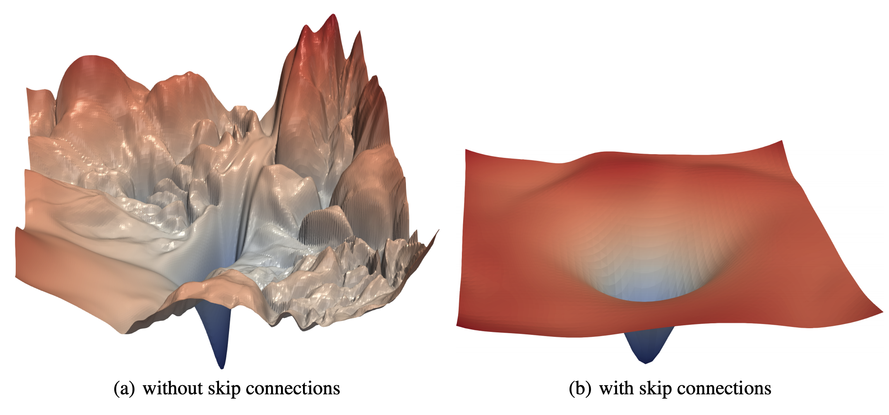
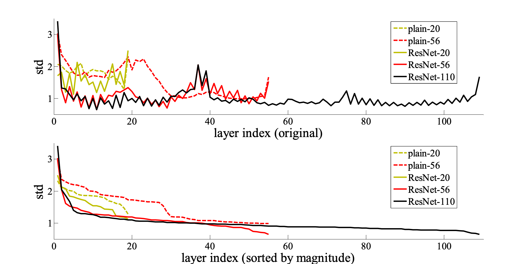
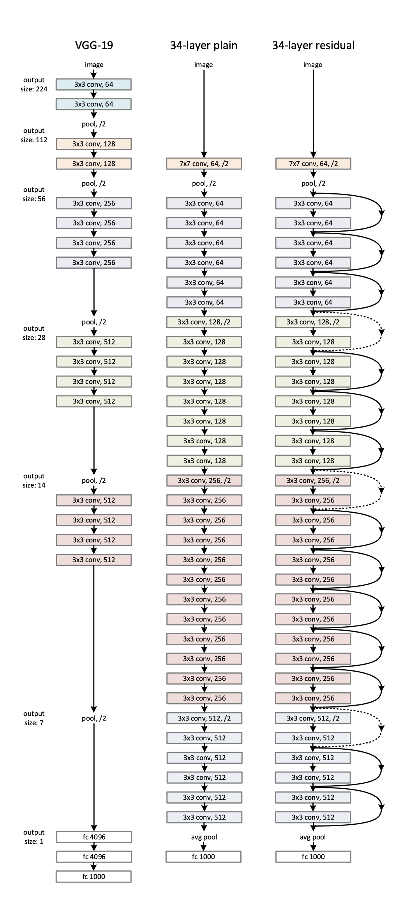
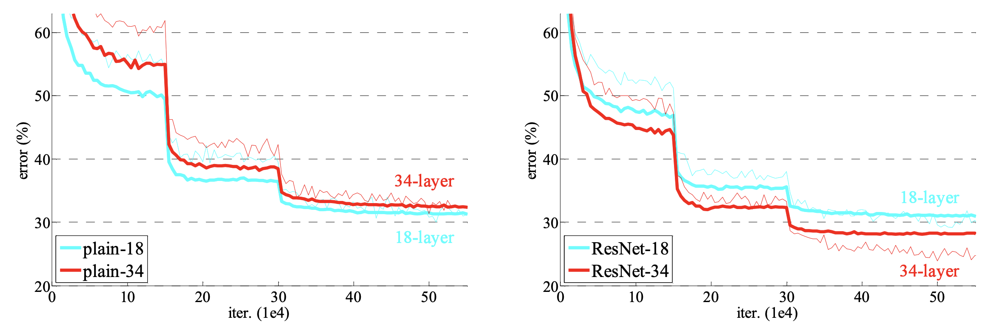
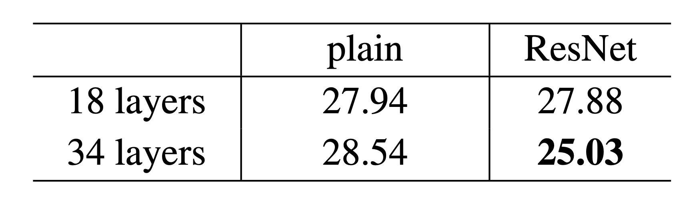
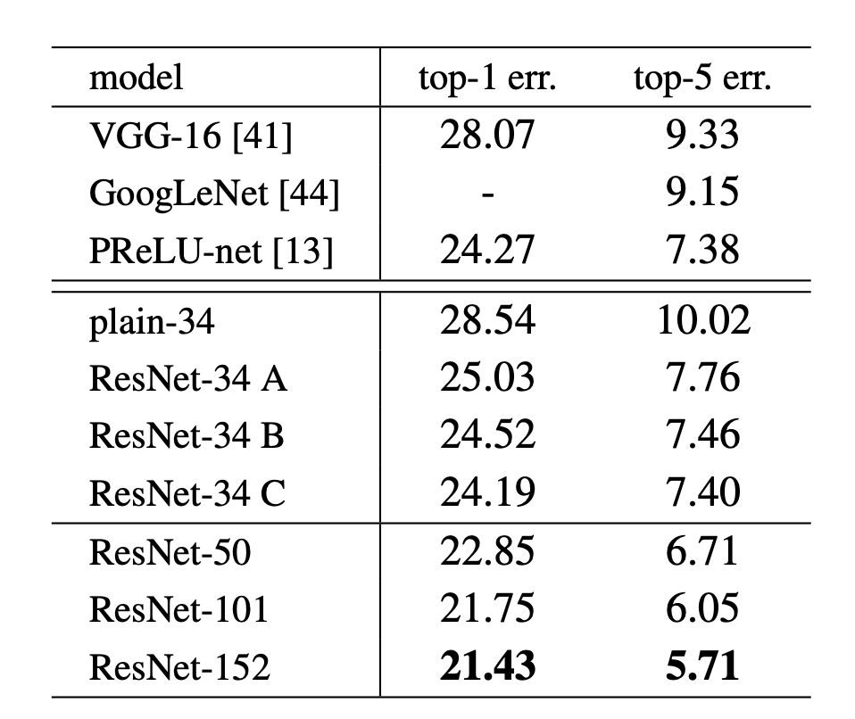
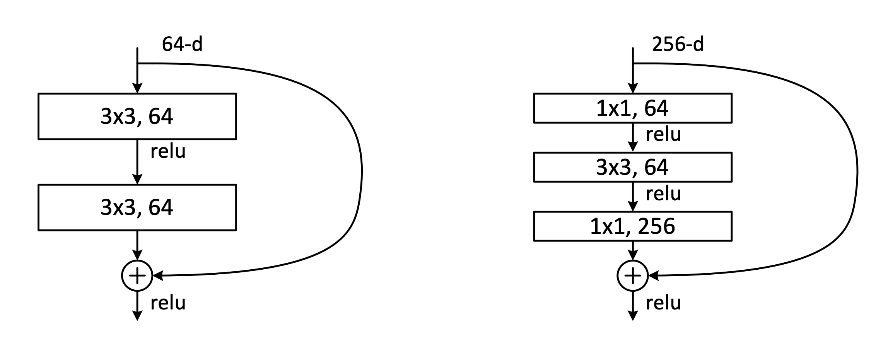
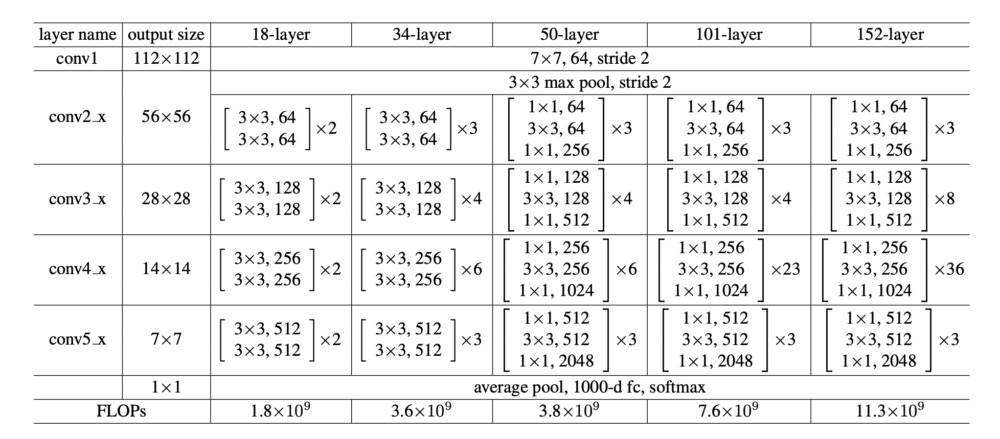
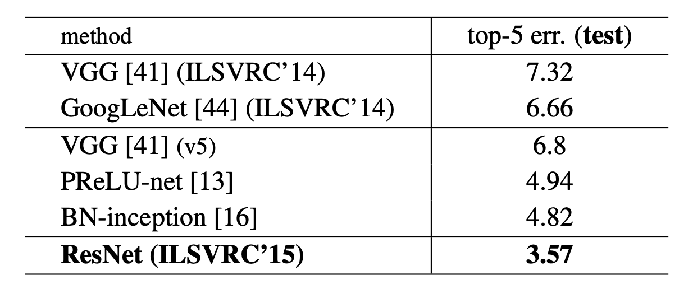
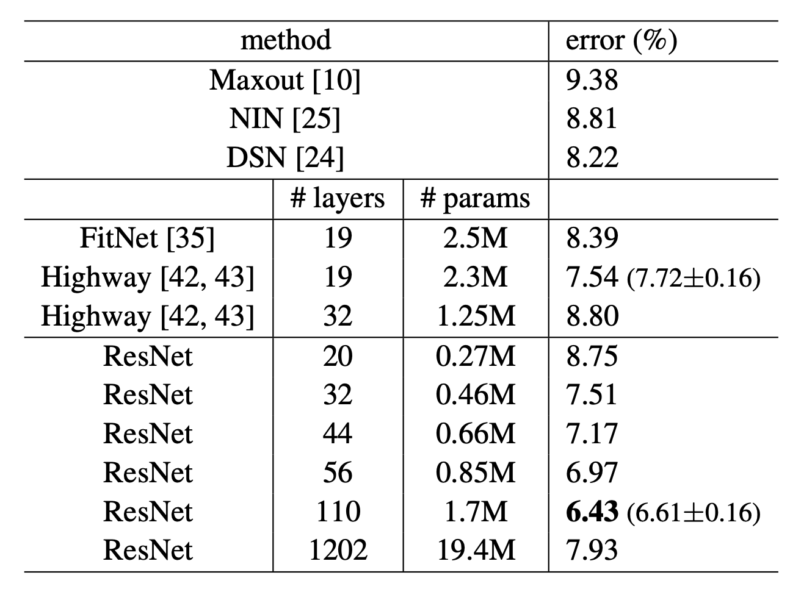

Resnet (2) - 2015
- Skip Connection의 위력💪을 알려주는 ResNet ✨
- ResNet 리뷰 2편!
- 저번 포스팅에서 살펴 본대로, ResNet은 Residual Learning이라고 부르는 방법을 통해 모델이 설명할 수 있는 표현력을 한층 업그레이드 시켰습니다. 이번 포스팅에서는 ResNet의 더 구체적인 구현 및 구조 그리고 결과에 대해 마저 살펴보도록 하겠습니다.
3. Deep Residual Learning ✨
3.1. Residual Learning
- 만약 아무리 복잡한 함수 - 딥러닝에서는 주로 해당 Task의 Loss를 0에 가깝게 만드는 함수를 찾는 것이 되겠죠 - 라 할지라도 여러개의 nonlinear layer로 점근적으로 근사할 수 있다고 한다면, 그 말은 곧 ResNet의 관점에서는 점근적으로 Residual functions에 근사한다는 말이랑 같습니다.
- Residual에 해당하는 부분, $H(x) - x$ 부분에 해당하는 $F(x)$가 그것 자체로 2개 혹은 3개의 CNN으로 이루어진 nonlinear layer들이기 때문에 그렇습니다.
- 그럼 왜 위의 말을 했느냐? 결국 $F(x)$로 함수에 근사를 하든, $F(x) + x$인 $H(x)$으로 원하는 함수로 근사를 하든, 결국 똑같이 근사한다는 거 아닌가? 뭐가 차이지? 할 수는 있겠지만, ‘학습 용이성’(The ease of learning)의 관점에서는 큰 차이가 나는 말이 됩니다. 그 증거로 아래의 사진을 보시죠.

위의 사진은 Visualizing the Loss Landscape of Neural Nets이라는 2017년 12월에 나온 논문의 실험 결과 입니다. ResNet-56에서 Skip Connetion을 제거해서 VGG 같은 모양을 같은 모델과 Skip Connection을 사용했을 때, loss function이 그리는 평활도를 3D로 표현했을 때, Skip connection을 사용하고 안하고의 분산이 상당히 차이가 커 보입니다.😶
이 원인을 논문에서 찾을 수 있는데요, 만약 optimal function이 identity mapping에 가까운 상황이라면, 이미 identity mapping 정보를 들고 있기 때문에 그 정보를 레퍼런스 삼아 weight를 조정하는 폭을 좀 더 쉽게 찾을 수 있다는 것입니다. 아예 새로운 function을 해당 레이어 마다 새로 조정하고 학습을 해야하는 것 보다 훨씬 더 빠르고 안정적인 방법이 되는 것이죠. 그래서, 논문에서도 아래와 같이 plane한 모델과 ResNet을 비교했을 때, 그 표준편차가 레이어마다 크게 차이가 난다는 것을 보여주고 있습니다.

저번 포스팅에서 언급했듯 ResNet의 큰 공로는 그 동안의 한계로 여겨지던 Degradation 문제를 해결한 것인데요, 논문에서는 이 Degradation을 재해석해서, ‘사실은 Identity mapping의 문제인데, 이걸 multiple nonlinear layers로만 근사하게끔하는 어려움을 야기시켰기 때문아닌가’라고 말합니다.
실제로는 Identity mapping이 최적인 상황이라면 ResNet의 경우는 그냥 shortcut connetions로 Residual을 0으로 만들어 버리면 그만이지만, 그런 선택지가 없을 경우에는 더 많이 쌓여버린 레이어들은 다른 선택지가 없이 계속 최적의 값을 근사하지 못하면서 작동한다는 것입니다. 😫
물론 identity mapping이 최적이 아니라면 identity mapping은 쓸모없는 거 아니냐 할 수도 있지만, 적어도 skip connection. 즉, shorcut connetion을 사용한다면 그렇지 못한 상황이 와도 미리 예방을 할 수 있습니다. 그런 점에서 성능이 안 좋아봤자 Skip connection을 사용하지 않는 모델과 같은 성능이거나, 더 좋은 성능을 낼 수 밖에 없습니다. 😎
3.2. Identity Mapping by Shortcuts
Basic Building Block
이전 포스팅에서 언급했던 ResNet의 Building block을 다시 한 번 살펴보면 아래와 같습니다.

- 위의 그림은 아래의 식으로 표현될 수 있습니다. 수식은 쉬운 이해를 위해 Fully-connected layer로 표현이 되었지만, 같은 개념으로 CNN에 적용될 수 있습니다.
$$y = F(x, {W_i}) + x$$
여기서 Residual mapping을 뜻하는 $F(x, {W_i})$은 그림에서 보시듯 두 개의 레이어로 이루어져 있어서 $F = W_2\sigma (W_1 x)$로 표현할 수 있습니다. 여기서 $\sigma$는 ReLU입니다. 그리고 $F + x$은 shortcut connection을 의미하는 것으로 element-wise addition이고, 그 뒤에 두 번째 nonlinearity를 취하면서=$\sigma(y)$ ResNet Building Block은 완성됩니다.
실제로는 ResNet 구조 상, Block의 input과 output channel size가 달라지는 부분이 생깁니다. 이런 경우에는 element-wise addition을 위해서 아래와 같이 차원을 맞춰줘야합니다. 이를 linear
projection($W_s$ - $s$는 shortcut connection을 의미)이라고 칭합니다.
$$y = F(x, {W_i}) + W_s x$$
3.3. Network Architectures 🌟
ResNet 34-layer의 구조는 아래 그림의 가장 오른쪽에 해당합니다. :) VGG Network, ResNet에서 skip connection을 제거한 plane 34-layer 모델(가운데)와 비교해서 그림으로 표현했습니다.

그림에서 점선으로 표현된 identity shortcut은 feature map size가 달라지는 부분, 그러니까 projection이 일어나는 경우를 뜻합니다. 이 때, 이미지 사이즈(channel)를 맞춰주기 위해서, (A) zero padding으로 channel을 맞춰준다. (B) 1x1 Conv로 차원을 맞춰준다. 라는 두 가지 옵션을 가지고 있습니다.
VGG는 총 19.6 billion FLOPs(FLoating point OPerationS)를 가지고 있는 반면, ResNet은 18%에 불과한 3.6 billion FLOPs만 가지고 있다는 것도 ResNet의 장점입니다. 😌
3.4. Implementation
Model의 Training Hyperparameter들을 정리하면 아래와 같습니다.
Image Resize:
1_ Shorter side randomly sampled in [256, 480] for scale augmentaion in VGG
2_ 224 x 224 random crop or horizontal flip
3_ The per-pixel mean subtracted in AlexNetBatch Normalization:
Used Batch Norm right after each Conv before activation.Initialization: He initailization. (PReLU 논문에 등장한)
Optimizer: SGD with a mini-batch size of 256
Learning rate:
Start from 0.1 and divided by 10 when the error plateaus.
weight decay 0.0001 and a momentum of 0.9Steps: $60 \times 10^4$
4. Experiments 🔬
Residual Network
- ImageNet data에 대해 여러가지 ResNet Model들로 실험을 하였습니다. 먼저는, 같은 layer 개수를 가진다고 할 때, Plain Network와 ResNet의 비교 입니다. 아래에서 보시는 바와 같이, Plain Network는 깊이가 깊어질 수록 Training Error가 증가하는 반면, ResNet은 더 떨어지는 차이가 있습니다.

- 그 결과, 아래와 같이 validation set에 대한 Top-1 error 성능에도 차이가 납니다. Plain 네트워크는 34 레이어에서 에러가 더 올라가는 반면, ResNet은 더 낮은 에러율을 보입니다. Plain과 ResNet의 계산량은 똑같다는 것을 생각하면 정말 skip connection을 하고 안하고의 차이가 엄청난 것 같네요.

- BN을 사용했기 때문에, Plain Network의 Optimization이 어렵다는 것은 vanishing gradients의 문제로 볼 수는 없다고 하네요. Forward나 Backward propagated gradient들이 사라지지 않고 잘 전달이 되는 것을 증명해봤다고 저자는 말하고 있습니다.
Identity vs. Projection Shortcuts
위에서 잠시 언급한, Projection - Image Size가 줄어들고 채널을 늘어나면서 차원을 맞춰줘야하는 문제 - 에 대해서 다양한 실험도 진행을 하는데요, 총 3가지 방법으로 ImageNet validation에 대해 실험을 진행해봅니다.
(A) zero-padding shortcuts: 늘어나는 부분만큼은 zero-padding으로 채웁니다.
(B) Projection shorcuts(= 1x1 Conv)를 통해서 차원을 맞춰줍니다. 다른 부분은 다 그냥 identity로 맞춰줍니다.
(C) 모든 Shortcut들을 Projection으로 만들어 사용합니다.그 결과 아래와 같이, 같은 34 layer일 경우 C가 성능은 가장 좋았습니다만, A,B,C 모든 경우에서 degration problem은 해결할 수 있기 때문에 Plain network에 비해 모두 성능이 다 좋기 때문에, 메모리나 time complexity 그리고 model size를 생각해서 C option은 사용하지 않는다고 합니다.
그래서 ResNet 50 이상의 깊이를 가지는 모델들에 대해서는 모두 dimension이 증가할 때만 Projection을 사용하는 B option을 사용했다고 합니다.

Deeper Bottleneck Architectures.
- ResNet layer가 50층 이상으로 깊어지면 아무래도 계산량에 따른 메모리가 걱정되는 것은 어쩔 수 없을 것입니다. 그래서 그런지, ResNet block을 basic block이라고 불렀던 아래 그림의 왼쪽에서, 50층 이상으로 깊어질 때는 오른쪽에 보이는 Bottleneck block으로 바꿔서 사용하게 됩니다. 😀

- 그림에서 보시듯, Residual에 대항하는 부분이 1x1, 3x3, 1x1 총 3개의 레이어로 구성되어 첫 번째 1x1에서 차원을 줄여주고, 3x3 Conv가 계산을 한 뒤 다시 1x1 Conv가 차원을 늘려서 맞춰주는 형태로 작동합니다. :) 그렇게 18 layer부터 152 layer까지 모든 ResNet 모델들의 구성을 한 눈에 살펴보면 아래와 같습니다.

Feature map의 사이즈가 줄어드는 conv3_1, conv4_1, 그리고 conv5_1에서 stride 2를 사용해서 이미지 크기를 줄입니다. 이렇게 152 layer까지 모델의 크기가 커져도 ResNet의 계산량은 총 11.3 billion FLOPs로, VGG-16/19의 15.3/19.6 billon FLOPs보다는 작다는 것이 놀랍네요 😶
위의
Identity vs. Projection Shortcuts부분에서 보셨듯, 레이어가 깊어질 수록 성능은 더 좋아졌습니다.
Comparisons with State-of-the-art Methods.
- ResNet 152-layer model 6개를 앙상블하여, 아래와 같이 top-5 error 3.57%이라는 놀라운 성적으로 2015 ImageNet Classification에서 신기록을 달성하면서 1위를 차지합니다. 🎉 물론, Single-model에서도 ResNet 50, 101, 152 layer는 VGG, PReLU-net, GoogLeNet, inception v2 등을 큰 차이로 뛰어넘고 1위를 차지 합니다.

Exploring Over 1000 layers
- 1000개가 넘는 layer에서도 ResNet은 잘 작동해서 성능이 더 좋아지는지 극한으로 몰아서 실험도 해봤다고 합니다. CIFAR-10에 대해서만 한 실험이긴 하지만, 아래와 같이 오히려 1202개나 되는 layers에서 110개일 때보다 에러가 오히려 더 커져버렸는데요, 저자들은 이를 overfitting 때문인 것 같다고 합니다.

- 여기까지, Resnet 리뷰를 마치도록 하겠습니다. 다음 편에서는 이 ResNet을 받아들여서 또 한 번의 Upgrade를 한 Inception v4를 리뷰해보도록 하겠습니다. :) 감사합니다.